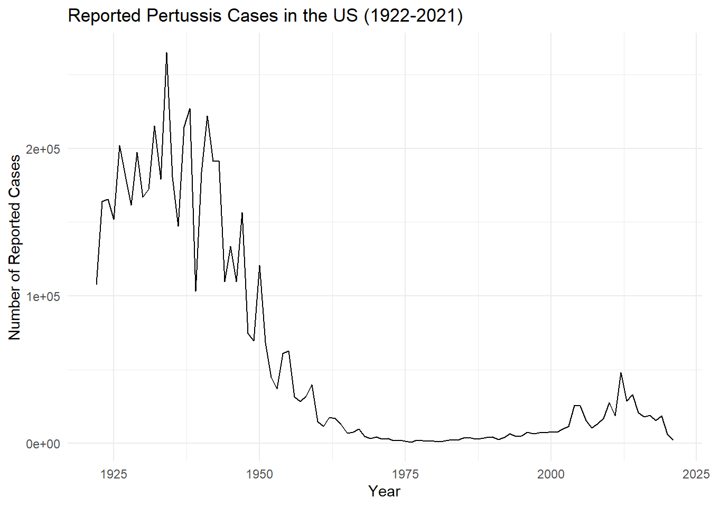
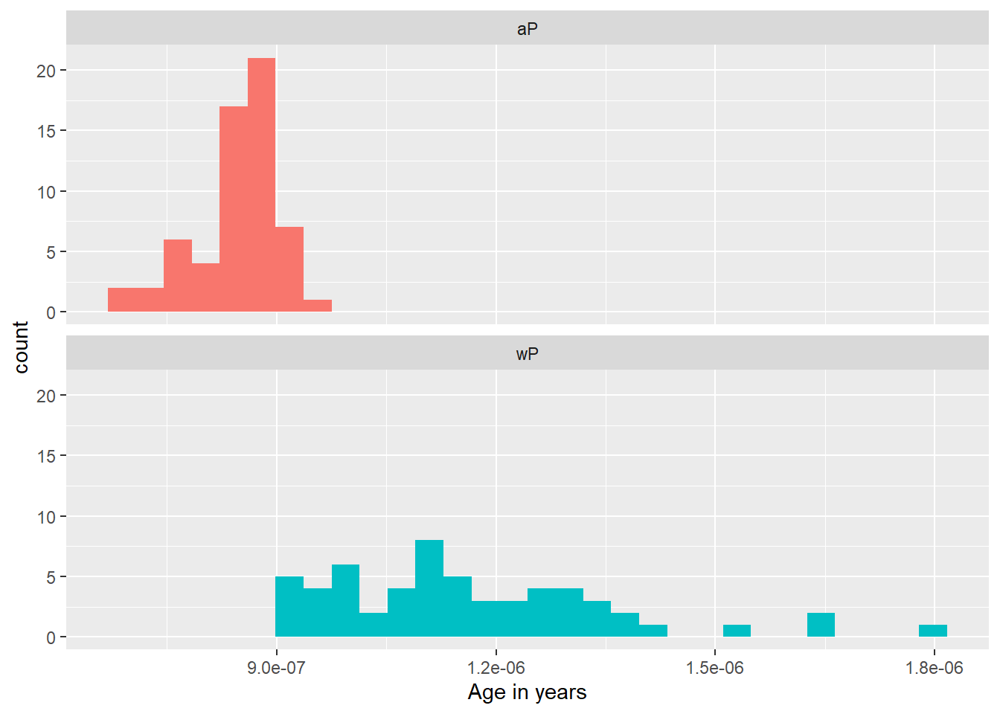
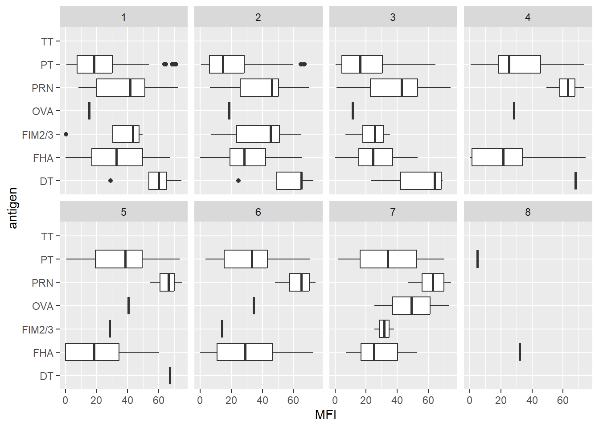
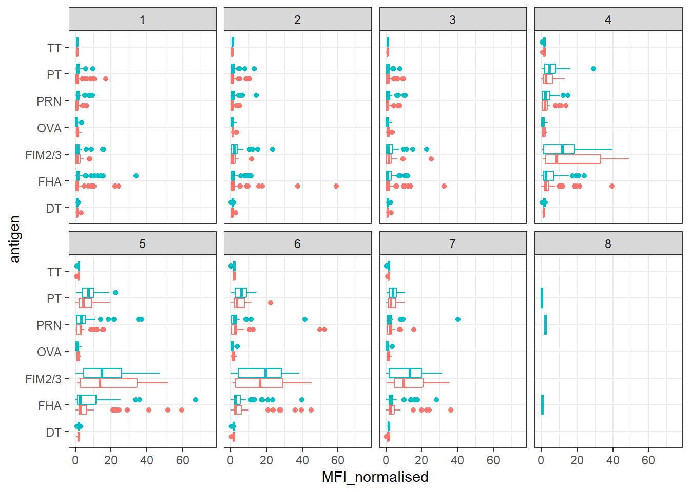
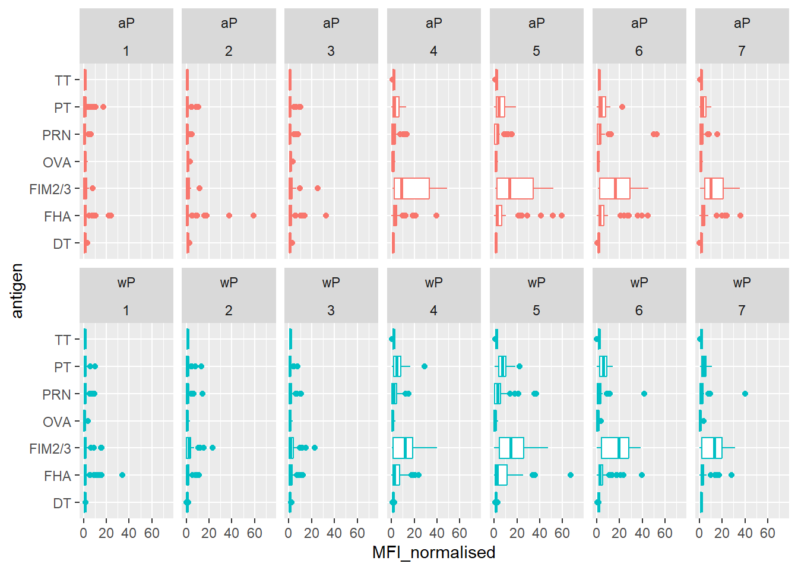
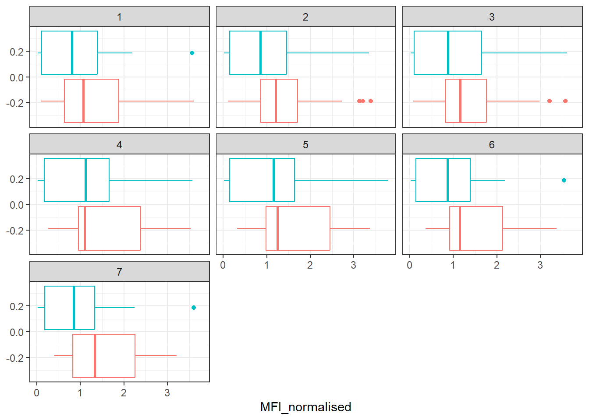
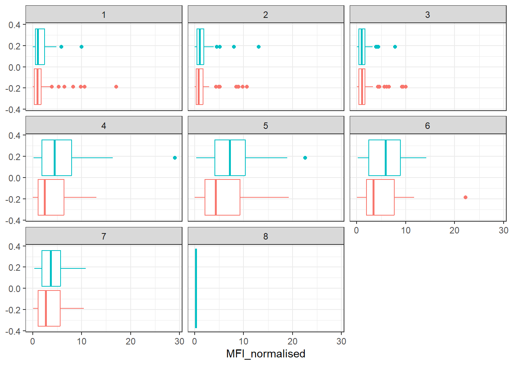
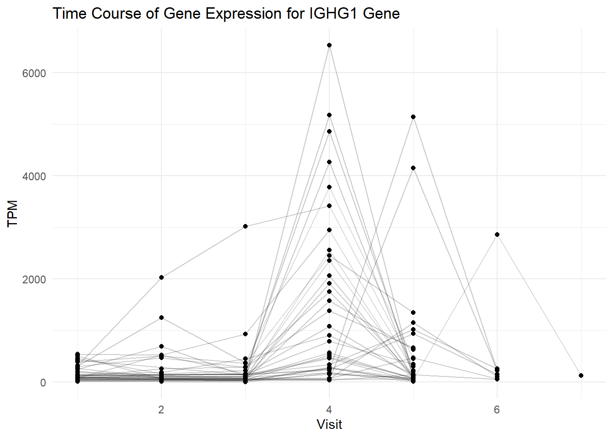
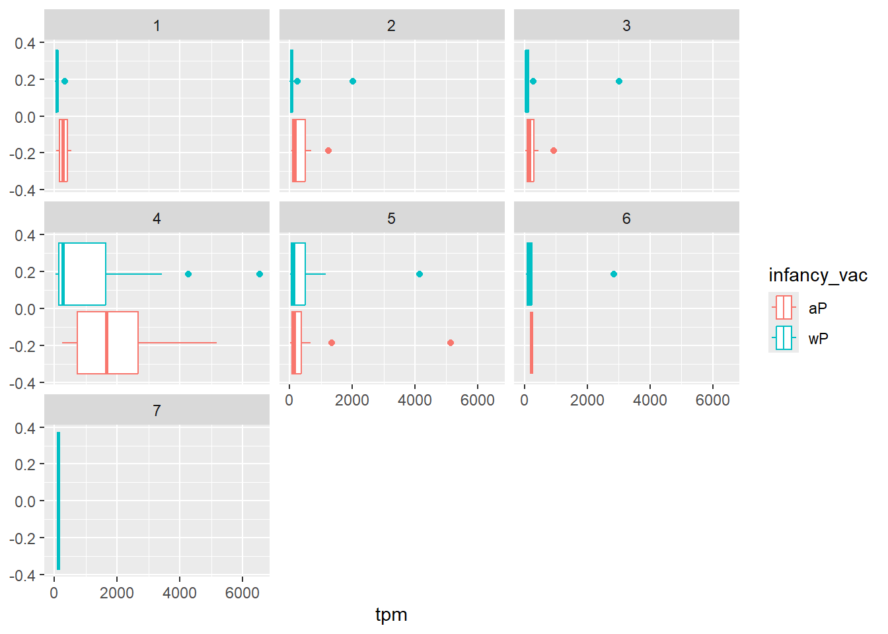
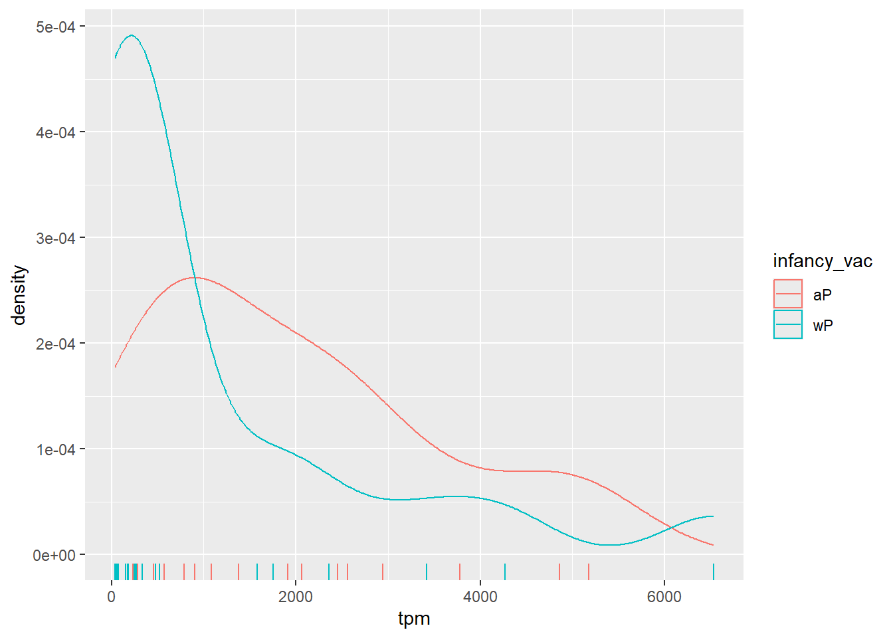

cdc <- data.frame(
Year = c(1922L, 1923L, 1924L, 1925L, 1926L, 1927L, 1928L, 1929L, 1930L, 1931L,
1932L, 1933L, 1934L, 1935L, 1936L, 1937L, 1938L, 1939L, 1940L, 1941L,
1942L, 1943L, 1944L, 1945L, 1946L, 1947L, 1948L, 1949L, 1950L, 1951L,
1952L, 1953L, 1954L, 1955L, 1956L, 1957L, 1958L, 1959L, 1960L, 1961L,
1962L, 1963L, 1964L, 1965L, 1966L, 1967L, 1968L, 1969L, 1970L, 1971L,
1972L, 1973L, 1974L, 1975L, 1976L, 1977L, 1978L, 1979L, 1980L, 1981L,
1982L, 1983L, 1984L, 1985L, 1986L, 1987L, 1988L, 1989L, 1990L, 1991L,
1992L, 1993L, 1994L, 1995L, 1996L, 1997L, 1998L, 1999L, 2000L, 2001L,
2002L, 2003L, 2004L, 2005L, 2006L, 2007L, 2008L, 2009L, 2010L, 2011L,
2012L, 2013L, 2014L, 2015L, 2016L, 2017L, 2018L, 2019L, 2020L, 2021L),
No_Reported_Pertussis_Cases = c(107473, 164191, 165418, 152003, 202210, 181411,
161799, 197371, 166914, 172559, 215343, 179135,
265269, 180518, 147237, 214652, 227319, 103188,
183866, 222202, 191383, 191890, 109873, 133792,
109860, 156517, 74715, 69479, 120718, 68687,
45030, 37129, 60886, 62786, 31732, 28295, 32148,
40005, 14809, 11468, 17749, 17135, 13005, 6799,
7717, 9718, 4810, 3285, 4249, 3036, 3287, 1759,
2402, 1738, 1010, 2177, 2063, 1623, 1730, 1248,
1895, 2463, 2276, 3589, 4195, 2823, 3450, 4157,
4570, 2719, 4083, 6586, 4617, 5137, 7796, 6564,
7405, 7298, 7867, 7580, 9771, 11647, 25827,
25616, 15632, 10454, 13278, 16858, 27550, 18719,
48277, 28639, 32971, 20762, 17972, 18975, 15609,
18617, 6124, 2116)
)lab 18 (Pertussis)
library(ggplot2)
ggplot(cdc, aes(x = Year, y = No_Reported_Pertussis_Cases)) +
geom_line() +
labs(title = "Reported Pertussis Cases in the US (1922-2021)",
x = "Year",
y = "Number of Reported Cases") +
theme_minimal()
Q2. Using the ggplot geom_vline() function add lines to your previous plot for the 1946 introduction of the wP vaccine and the 1996 switch to aP vaccine (see example in the hint below). What do you notice?
aP vaccine was more effective than wP
Q3. Describe what happened after the introduction of the aP vaccine? Do you have a possible explanation for the observed trend?
the number of cases decreased to 0.
# Load the package
library(jsonlite)# Read the main subject database table from the CMI-PB API
subject <- fromJSON("https://www.cmi-pb.org/api/subject")
# Print the first few rows of the subject table
head(subject, 3) subject_id infancy_vac biological_sex ethnicity race
1 1 wP Female Not Hispanic or Latino White
2 2 wP Female Not Hispanic or Latino White
3 3 wP Female Unknown White
year_of_birth date_of_boost dataset
1 1986-01-01 2016-09-12 2020_dataset
2 1968-01-01 2019-01-28 2020_dataset
3 1983-01-01 2016-10-10 2020_datasetQ4. How many aP and wP infancy vaccinated subjects are in the dataset?
# Count the number of subjects vaccinated with aP and wP
table(subject$infancy_vac)
aP wP
60 58 Q5. How many Male and Female subjects/patients are in the dataset?
# Count the number of Male and Female subjects
table(subject$biological_sex)
Female Male
79 39 Q6. What is the breakdown of race and biological sex (e.g. number of Asian females, White males etc…)?
# Create a contingency table of race and biological sex
table(subject$race, subject$biological_sex)
Female Male
American Indian/Alaska Native 0 1
Asian 21 11
Black or African American 2 0
More Than One Race 9 2
Native Hawaiian or Other Pacific Islander 1 1
Unknown or Not Reported 11 4
White 35 20Q7. Using this approach determine (i) the average age of wP individuals, (ii) the average age of aP individuals; and (iii) are they significantly different?
# Load the lubridate package
library(lubridate)
Attaching package: 'lubridate'The following objects are masked from 'package:base':
date, intersect, setdiff, union# Calculate the age of individuals
subject$age <- as.numeric(difftime(Sys.Date(), ymd(subject$year_of_birth), units = "days") / 365.25)
# Calculate the average age of wP and aP individuals
average_age_wP <- mean(subject$age[subject$infancy_vac == "wP"], na.rm = TRUE)
average_age_aP <- mean(subject$age[subject$infancy_vac == "aP"], na.rm = TRUE)
# Print the results
cat("Average age of wP individuals:", round(average_age_wP, 1), "years\n")Average age of wP individuals: 36.8 yearscat("Average age of aP individuals:", round(average_age_aP, 1), "years\n")Average age of aP individuals: 26.5 years# Perform a t-test to determine if the ages are significantly different
t.test(subject$age[subject$infancy_vac == "wP"], subject$age[subject$infancy_vac == "aP"])
Welch Two Sample t-test
data: subject$age[subject$infancy_vac == "wP"] and subject$age[subject$infancy_vac == "aP"]
t = 12.436, df = 65.411, p-value < 2.2e-16
alternative hypothesis: true difference in means is not equal to 0
95 percent confidence interval:
8.643385 11.950080
sample estimates:
mean of x mean of y
36.82532 26.52859 Q8. Determine the age of all individuals at time of boost?
# Calculate the age of all individuals at the time of boost
subject$age_at_boost <- as.numeric(difftime(ymd(subject$date_of_boost), ymd(subject$year_of_birth), units = "days") / 365.25)
# Print the results
head(subject$age_at_boost)[1] 30.69678 51.07461 33.77413 28.65982 25.65914 28.77481Q9. With the help of a faceted boxplot or histogram (see below), do you think these two groups are significantly different?
yes the p-value is less than 0.05.
# Load the ggplot2 package
library(ggplot2)
# Create a faceted boxplot or histogram
ggplot(subject) +
aes(time_length(age, "year"),
fill=as.factor(infancy_vac)) +
geom_histogram(show.legend=FALSE) +
facet_wrap(vars(infancy_vac), nrow=2) +
xlab("Age in years")`stat_bin()` using `bins = 30`. Pick better value with `binwidth`.
# Read the specimen and ab_titer tables into R
specimen_url <- "https://www.cmi-pb.org/api/specimen"
specimen <- read_json(specimen_url, simplifyVector = TRUE)
titer_url <- "https://www.cmi-pb.org/api/v4/plasma_ab_titer"
titer <- read_json(titer_url, simplifyVector = TRUE) library(dplyr)
Attaching package: 'dplyr'The following objects are masked from 'package:stats':
filter, lagThe following objects are masked from 'package:base':
intersect, setdiff, setequal, union# Assuming specimen and subject are the data frames
meta <- inner_join(specimen, subject,)Joining with `by = join_by(subject_id)`dim(meta)[1] 939 15head(meta) specimen_id subject_id actual_day_relative_to_boost
1 1 1 -3
2 2 1 1
3 3 1 3
4 4 1 7
5 5 1 11
6 6 1 32
planned_day_relative_to_boost specimen_type visit infancy_vac biological_sex
1 0 Blood 1 wP Female
2 1 Blood 2 wP Female
3 3 Blood 3 wP Female
4 7 Blood 4 wP Female
5 14 Blood 5 wP Female
6 30 Blood 6 wP Female
ethnicity race year_of_birth date_of_boost dataset
1 Not Hispanic or Latino White 1986-01-01 2016-09-12 2020_dataset
2 Not Hispanic or Latino White 1986-01-01 2016-09-12 2020_dataset
3 Not Hispanic or Latino White 1986-01-01 2016-09-12 2020_dataset
4 Not Hispanic or Latino White 1986-01-01 2016-09-12 2020_dataset
5 Not Hispanic or Latino White 1986-01-01 2016-09-12 2020_dataset
6 Not Hispanic or Latino White 1986-01-01 2016-09-12 2020_dataset
age age_at_boost
1 38.42847 30.69678
2 38.42847 30.69678
3 38.42847 30.69678
4 38.42847 30.69678
5 38.42847 30.69678
6 38.42847 30.69678Q10. Now using the same procedure join meta with titer data so we can further analyze this data in terms of time of visit aP/wP, male/female etc.
abdata <- inner_join(titer, meta, by = "specimen_id")
dim(abdata)[1] 41775 22Q11. How many specimens (i.e. entries in abdata) do we have for each isotype?
table(abdata$isotype)
IgE IgG IgG1 IgG2 IgG3 IgG4
6698 3233 7961 7961 7961 7961 Q12. What are the different $dataset values in abdata and what do you notice about the number of rows for the most “recent” dataset?
# Find unique values in the dataset column
unique_datasets <- unique(abdata$dataset)
# Display unique datasets
print(unique_datasets)[1] "2020_dataset" "2021_dataset" "2022_dataset"# Count the number of rows for each dataset
table(abdata$dataset)
2020_dataset 2021_dataset 2022_dataset
31520 8085 2170 igg <- abdata %>% filter(isotype == "IgG")
head(igg) specimen_id isotype is_antigen_specific antigen MFI MFI_normalised
1 1 IgG TRUE PT 68.56614 3.736992
2 1 IgG TRUE PRN 332.12718 2.602350
3 1 IgG TRUE FHA 1887.12263 34.050956
4 19 IgG TRUE PT 20.11607 1.096366
5 19 IgG TRUE PRN 976.67419 7.652635
6 19 IgG TRUE FHA 60.76626 1.096457
unit lower_limit_of_detection subject_id actual_day_relative_to_boost
1 IU/ML 0.530000 1 -3
2 IU/ML 6.205949 1 -3
3 IU/ML 4.679535 1 -3
4 IU/ML 0.530000 3 -3
5 IU/ML 6.205949 3 -3
6 IU/ML 4.679535 3 -3
planned_day_relative_to_boost specimen_type visit infancy_vac biological_sex
1 0 Blood 1 wP Female
2 0 Blood 1 wP Female
3 0 Blood 1 wP Female
4 0 Blood 1 wP Female
5 0 Blood 1 wP Female
6 0 Blood 1 wP Female
ethnicity race year_of_birth date_of_boost dataset
1 Not Hispanic or Latino White 1986-01-01 2016-09-12 2020_dataset
2 Not Hispanic or Latino White 1986-01-01 2016-09-12 2020_dataset
3 Not Hispanic or Latino White 1986-01-01 2016-09-12 2020_dataset
4 Unknown White 1983-01-01 2016-10-10 2020_dataset
5 Unknown White 1983-01-01 2016-10-10 2020_dataset
6 Unknown White 1983-01-01 2016-10-10 2020_dataset
age age_at_boost
1 38.42847 30.69678
2 38.42847 30.69678
3 38.42847 30.69678
4 41.42916 33.77413
5 41.42916 33.77413
6 41.42916 33.77413Q13. Complete the following code to make a summary boxplot of Ab titer levels (MFI) for all antigens:
# Complete the following code to make a summary boxplot of Ab titer levels (MFI) for all antigens
ggplot(igg) +
aes(x = MFI, y = antigen) + # Specify x as MFI and y as antigen
geom_boxplot() + # Use geom_boxplot() to create a boxplot
xlim(0, 75) + # Limit the x-axis range from 0 to 75
facet_wrap(vars(visit), nrow = 2) # Facet by visitWarning: Removed 2514 rows containing non-finite outside the scale range
(`stat_boxplot()`).
ggplot(igg) +
aes(MFI_normalised, antigen, col=infancy_vac ) +
geom_boxplot(show.legend = FALSE) +
facet_wrap(vars(visit), nrow=2) +
xlim(0,75) +
theme_bw()Warning: Removed 5 rows containing non-finite outside the scale range
(`stat_boxplot()`).
igg %>% filter(visit != 8) %>%
ggplot() +
aes(MFI_normalised, antigen, col=infancy_vac ) +
geom_boxplot(show.legend = FALSE) +
xlim(0,75) +
facet_wrap(vars(infancy_vac, visit), nrow=2)Warning: Removed 5 rows containing non-finite outside the scale range
(`stat_boxplot()`).
library(dplyr)
# Filter for OVA antigen
igg_ova <- filter(igg, antigen == "OVA")
# Create boxplot for OVA antigen
ggplot(igg_ova) +
aes(MFI_normalised, col = infancy_vac) +
geom_boxplot(show.legend = FALSE) +
facet_wrap(vars(visit)) +
theme_bw()
# Filter for PT antigen
igg_pt <- filter(igg, antigen == "PT")
# Create boxplot for PT antigen
ggplot(igg_pt) +
aes(MFI_normalised, col = infancy_vac) +
geom_boxplot(show.legend = FALSE) +
facet_wrap(vars(visit)) +
theme_bw()
Q16. What do you notice about these two antigens time courses and the PT data in particular?
The time courses for the OVA antigen show relatively stable IgG antibody titers over time, with minimal variation between visits. This is expected, as OVA is not a component of the pertussis vaccine and is used as a control. In contrast, the time courses for the PT antigen show more variability, especially in the wP group. This variability may indicate differences in the immune response to the PT antigen between individuals.
Q17. Do you see any clear difference in aP vs. wP responses?
Based on the boxplots, there doesn’t appear to be a clear difference in IgG antibody titers between aP and wP individuals for either the OVA or PT antigens. Both groups show similar patterns of antibody response over time.
abdata.21 <- abdata %>% filter(dataset == "2021_dataset")
abdata.21 %>%
filter(isotype == "IgG", antigen == "PT") %>%
ggplot() +
aes(x=planned_day_relative_to_boost,
y=MFI_normalised,
col=infancy_vac,
group=subject_id) +
geom_point() +
geom_line() +
geom_vline(xintercept=0, linetype="dashed") +
geom_vline(xintercept=14, linetype="dashed") +
labs(title="2021 dataset IgG PT",
subtitle = "Dashed lines indicate day 0 (pre-boost) and 14 (apparent peak levels)")
abdata.20 <- abdata %>% filter(dataset == "2020_dataset")
abdata.20 %>%
filter(isotype == "IgG", antigen == "PT") %>%
ggplot() +
aes(x=planned_day_relative_to_boost,
y=MFI_normalised,
col=infancy_vac,
group=subject_id) +
geom_point() +
geom_line() +
geom_vline(xintercept=0, linetype="dashed") +
geom_vline(xintercept=14, linetype="dashed") +
labs(title="2020 dataset IgG PT",
subtitle = "Dashed lines indicate day 0 (pre-boost) and 14 (apparent peak levels)")
Q18. Does this trend look similar for the 2020 dataset?
No it is different.
# Read available RNA-Seq data for the IGHG1 gene
url <- "https://www.cmi-pb.org/api/v2/rnaseq?versioned_ensembl_gene_id=eq.ENSG00000211896.7"
rna <- read_json(url, simplifyVector = TRUE)
# Join RNA expression data with metadata
ssrna <- inner_join(rna, meta, by = "specimen_id")ggplot(ssrna) +
aes(x = visit, y = tpm, group = subject_id) +
geom_point() +
geom_line(alpha = 0.2) +
labs(title = "Time Course of Gene Expression for IGHG1 Gene",
x = "Visit",
y = "TPM") +
theme_minimal()
Q20.: What do you notice about the expression of this gene (i.e. when is it at it’s maximum level)?
The expression of the IGHG1 gene appears to be at its maximum level around the time of the boost, as indicated by the highest TPM values occurring around that time.
Q21. Does this pattern in time match the trend of antibody titer data? If not, why not?
The pattern in the gene expression of IGHG1 does not exactly match the trend of antibody titer data. While the gene expression peaks around the time of the boost, the antibody titer data may show a delayed or different pattern due to the time required for the immune system to produce antibodies in response to the boost.
ggplot(ssrna) +
aes(tpm, col=infancy_vac) +
geom_boxplot() +
facet_wrap(vars(visit))
ssrna %>%
filter(visit==4) %>%
ggplot() +
aes(tpm, col=infancy_vac) + geom_density() +
geom_rug() 